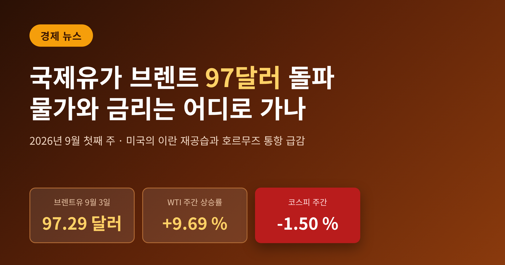
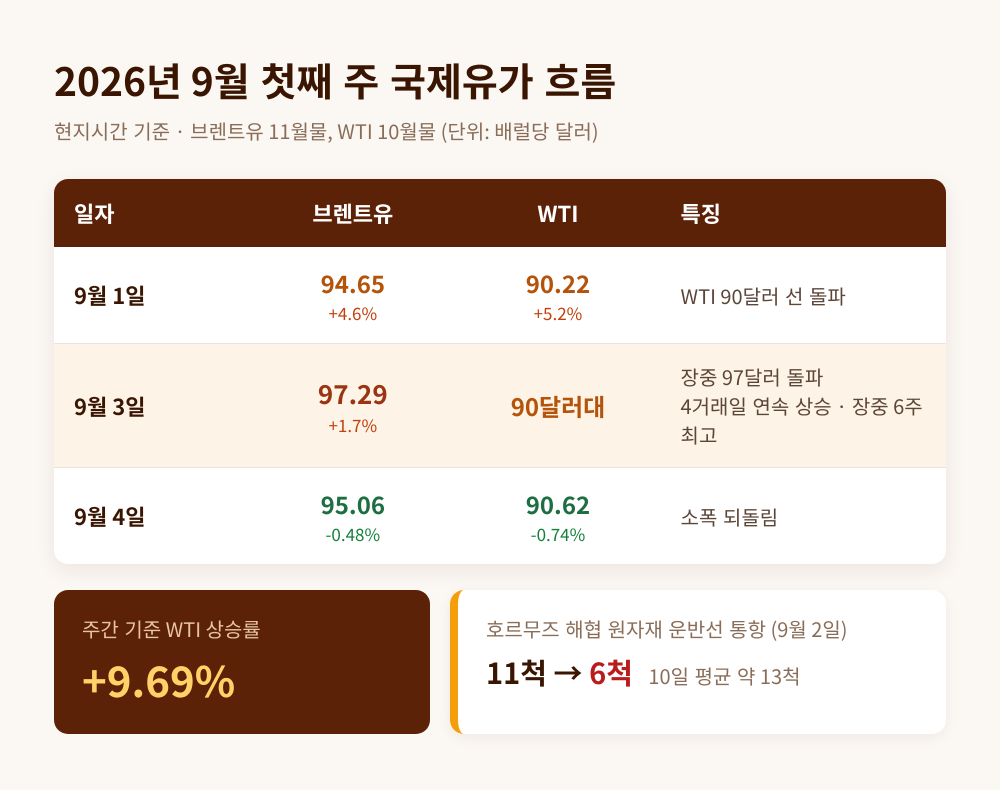
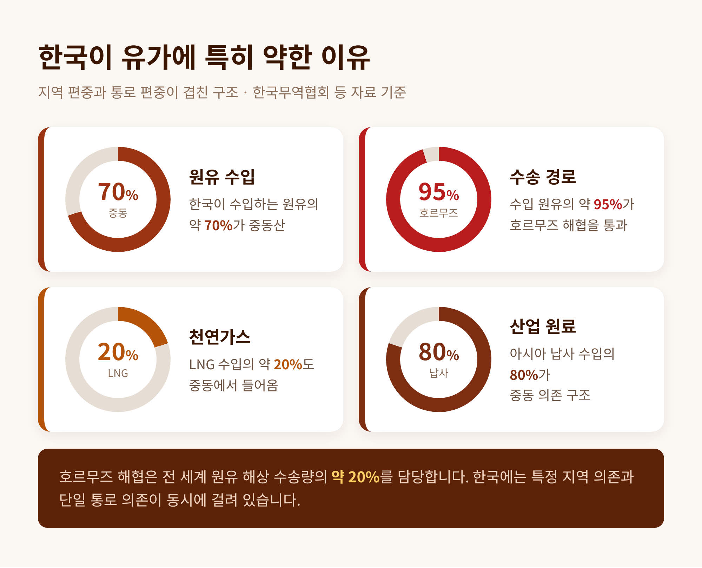
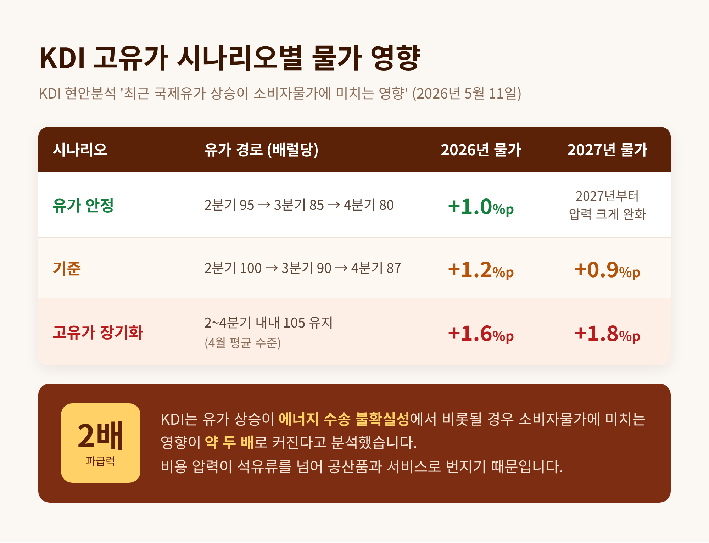
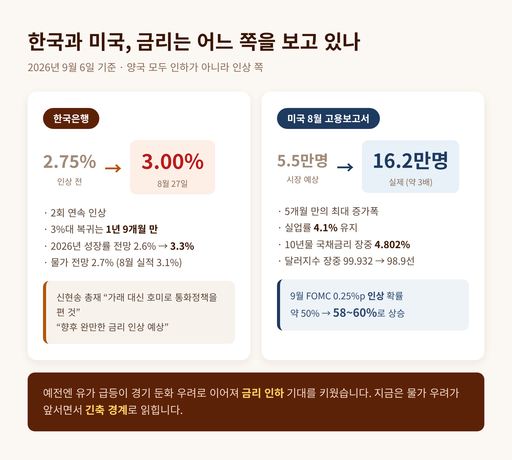
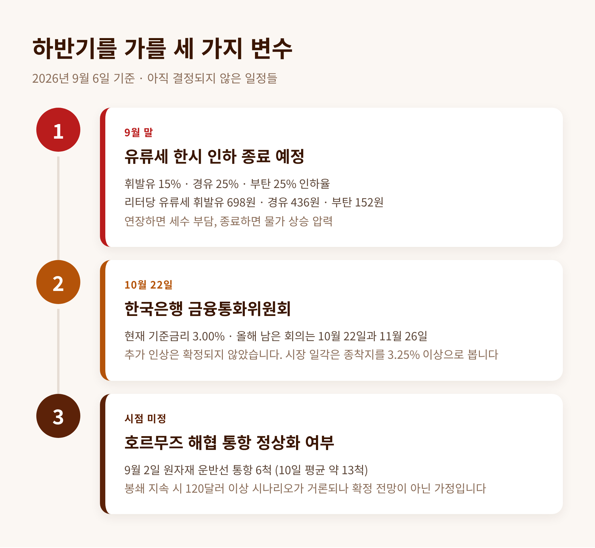

2026년 9월 첫째 주 브렌트유 97달러 · WTI 주간 9.69% 급등이 남긴 것

이번 글에서는 2026년 9월 첫째 주에 벌어진 국제유가 급등과, 그것이 한국의 하반기 물가·금리·환율에 남긴 흔적을 정리해 보겠습니다.
숫자 하나하나가 우리 생활비와 대출 이자로 이어지는 사안입니다. 확인된 사실과 아직 확인되지 않은 것을 구분해 짚어 보겠습니다.
2026년 9월 첫째 주, 국제유가는 다시 뛰었습니다.
9월 1일(현지시간) 런던 ICE선물거래소에서 브렌트유 11월물은 배럴당 4.16달러(4.6%) 오른 94.65달러에 마감했습니다. 같은 날 WTI 10월물은 4.46달러(5.2%) 급등한 90.22달러를 기록했습니다. WTI가 90달러 선을 넘어선 순간입니다.
상승은 거기서 멈추지 않았습니다. 9월 3일 브렌트유는 전 거래일보다 1.7% 오른 97.29달러까지 올랐고, 장중 한때 97달러를 돌파했습니다. 두 유종 모두 4거래일 연속 상승하며 장중 6주 만의 최고치를 찍었습니다.
주간으로 계산하면 WTI는 약 9.69% 올랐습니다. 다섯 거래일 만에 10% 가까이 뛴 셈입니다.
다만 상승 일변도는 아니었습니다. 9월 4일 종가는 WTI 90.62달러(-0.74%), 브렌트 95.06달러(-0.48%)로 소폭 되돌려졌습니다.

배경에는 미국의 이란 재공습이 있습니다.
미군이 이란에 대한 공습을 재개하면서, 호르무즈 해협이 정상화되리라는 기대가 사라졌습니다. 시장은 즉각 공급 차질을 가격에 반영했습니다.
통항 숫자가 이를 보여줍니다. 9월 2일 호르무즈 해협을 통과한 원자재 운반선은 6척이었습니다. 전날 11척에서 절반 가까이 줄었습니다. 최근 10일 평균이 약 13척이었으니, 그 절반에도 미치지 못한 수치입니다.
공급 설비 자체도 손상됐습니다. 2026년 하반기 들어 중동 지역에서 하루 280만 배럴 규모의 정유설비가 피격된 것으로 집계됩니다. 글로벌 수요의 약 3%에 해당하는 규모입니다.
거슬러 올라가면 사태는 올해 2월부터 이어져 왔습니다. 2월 28일 이스라엘과 미국의 기습 공습, 3월 9일 WTI 111.24달러 도달, 6월 미·이란 종전 양해각서 체결과 일부 통항 재개, 7월 컨테이너선 피격과 미군의 나흘 연속 타격.
봉합과 재발이 반복되는 구조입니다. 9월의 급등은 그 사이클의 최신 국면이었습니다.
산유국이 아닌 나라는 모두 유가에 취약합니다. 그런데 한국은 그중에서도 취약한 축에 속합니다.
한국무역협회 자료에 따르면 한국 원유 수입의 약 70%가 중동에 집중돼 있습니다. LNG도 약 20%가 중동에서 옵니다. 더 중요한 것은 경로입니다. 한국이 들여오는 원유의 약 95%가 호르무즈 해협을 지나갑니다.
지역 편중과 통로 편중이 겹친 구조입니다.
여기에 산업 원료까지 얽힙니다. 아시아 납사 수입의 80%가 중동에 의존하고 있어, 석유화학 원료 조달에도 차질이 발생했습니다.

유가가 오르기 전부터 한국 물가는 편치 않았습니다.
국가데이터처가 9월 2일 발표한 8월 소비자물가동향을 보면, 소비자물가지수는 120.05로 전년 동월 대비 3.1% 올랐습니다. 7월 2.8%에서 0.3%포인트 확대되며 두 달 만에 다시 3%대로 복귀했습니다.
흐름을 늘어놓으면 이렇습니다. 5월 3.1%, 6월 3.2%, 7월 2.8%, 8월 3.1%.
석유류는 14.2% 올랐습니다. 근원물가는 3년 3개월 만에 최고 수준을 기록했습니다.
주목할 대목은 정부 개입의 크기입니다. 정부는 석유제품 최고가격제가 8월 물가 상승률을 0.5%포인트 낮췄다고 분석했습니다. 이 조치가 없었다면 8월 물가는 3.6%였을 것이라는 뜻입니다.
반대로 지난해 8월 이동통신 요금 감면의 기저효과를 빼면 상승률은 약 2.5%로 추산됩니다. 통계 위에 여러 겹의 특이요인이 얹혀 있는 상태입니다.
한국개발연구원(KDI)은 지난 5월 '최근 국제유가 상승이 소비자물가에 미치는 영향'에서 세 가지 시나리오를 제시했습니다.
유가가 2분기 95달러에서 4분기 80달러로 안정되면 2026년 물가는 1.0%포인트 상승합니다. 2분기 100달러에서 4분기 87달러로 완만히 내려오는 기준 시나리오에서는 1.2%포인트입니다. 4월 평균 수준인 105달러가 연말까지 이어지면 1.6%포인트, 2027년에는 1.8%포인트까지 밀어 올립니다.
이 보고서에서 가장 눈여겨볼 대목은 따로 있습니다. 유가 상승이 에너지 수송 불확실성에서 비롯될 경우, 소비자물가에 미치는 영향이 약 두 배로 커진다는 분석입니다. 불확실성이 석유류를 넘어 공산품과 서비스로 비용 압력을 퍼뜨리기 때문입니다.
이번 호르무즈 사태가 바로 그 유형에 해당합니다. 산유국의 감산이 아니라, 실어 나르는 길이 막힌 상황입니다.

여기서 흔한 오해 하나를 정리하겠습니다. 유가가 오르면 경기가 나빠지니 금리를 내릴 것이라는 기대입니다. 지금 국면은 그 반대입니다.
한국은행 금융통화위원회는 8월 27일 기준금리를 2.75%에서 3.00%로 0.25%포인트 올렸습니다. 2회 연속 인상이며, 기준금리가 3%대에 오른 것은 1년 9개월 만입니다.
신현송 한국은행 총재는 인상 배경을 이렇게 설명했습니다. "거시경제 안정을 도모하기 위해서는 통화정책에 대한 선제적 대응이 필요하다." 연속 인상을 두고는 "가래 대신 호미로 통화정책을 편 것"이라고 표현했습니다. 뒤늦게 강도 높게 대응하기보다 초기에 손을 쓰는 편이 비용이 적다는 판단입니다.
같은 날 한국은행은 2026년 성장률 전망을 2.6%에서 3.3%로 0.7%포인트 올렸습니다. 반도체 경기 호황이 배경입니다. 2021년 4.7% 이후 5년 만의 최고 수준입니다.
물가 전망은 2.7%를 유지했습니다. 그런데 8월 실적치는 3.1%입니다. 전망과 현실 사이에 이미 틈이 벌어져 있습니다.
미국도 방향이 같습니다. 9월 4일 발표된 8월 고용보고서에서 비농업 부문 고용은 16만2000명 늘었습니다. 시장 예상치인 5만5000~5만6000명의 약 세 배이자, 5개월 만의 최대 증가폭입니다. 실업률은 4.1%를 유지했습니다.
발표 직후 9월 FOMC에서 금리를 0.25%포인트 인상할 확률은 50% 안팎에서 58~60% 수준까지 뛰었습니다. 미 10년물 국채금리는 장중 4.802%까지 올랐고, 달러지수는 99.932를 찍은 뒤 98.9선으로 되밀렸습니다.
예전엔 유가 급등이 경기 둔화 우려로 이어져 금리 인하 기대를 키웠습니다. 지금은 물가 우려가 앞서면서 긴축 경계로 이어집니다. 같은 사건이 정반대 신호로 읽히는 국면입니다.

여기서 흥미로운 어긋남이 나타납니다.
통상 유가 급등은 원화 약세 요인입니다. 수입 대금이 늘어 달러 수요가 커지기 때문입니다. 그런데 9월 4일 서울외환시장에서 원/달러 환율은 전일 대비 9.4원 내린 1,359.3원에 마감했습니다. 장 초반에는 1,355원까지 떨어졌습니다.
미국 민간고용 부진에 따른 달러 약세와, 매파적 일본은행을 배경으로 한 엔화 강세가 더 강하게 작용한 결과입니다. 유가 충격이 환율로 곧장 전이되지는 않았습니다.
다만 같은 날 밤 미국 고용지표가 나온 뒤 달러는 다시 강세로 돌아섰습니다. 9월 5일 이후의 방향은 별개로 봐야 합니다.
증시는 정직하게 반응했습니다. 8월 31일부터 9월 4일까지 한 주 동안 코스피는 1.50%, 코스닥은 2.97% 내렸습니다. 지정학 리스크가 유가를 밀어 올리고, 그것이 금리 경계로 번지며 위험자산을 눌렀습니다.
고유가를 단일한 재앙으로만 보면 그림을 놓칩니다.
정유업계는 오히려 호황입니다. 증권가 전망에 따르면 정유·화학 영업이익 규모는 2025년 0.5조원에서 2026년 5조4000억원 수준으로 사상 최대에 이를 것으로 예상됩니다. 국내 정유사는 운송용 제품 비중이 63% 이상이어서, 경유와 항공유 강세가 실적에 그대로 연결됩니다. 하반기 복합정제마진은 배럴당 26달러 수준으로 추정되는데, 전쟁 이전인 2025년 4분기의 10달러와 비교하면 두 배가 넘습니다.
반면 항공사와 석유화학 기업, 그리고 기름값을 지불하는 가계는 비용을 떠안습니다. 같은 유가 상승이 업종에 따라 정반대 손익으로 갈립니다.
이해관계가 갈리니 정책 판단도 단순하지 않습니다.
앞으로를 가를 첫 번째 변수는 정부의 세제 결정입니다.
정부는 7월 24일 유류세 한시 인하 조치를 9월 말까지 두 달 연장했습니다. 인하율은 휘발유 15%, 경유 25%, 부탄 25%입니다. 리터당 유류세는 휘발유 698원, 경유 436원, 부탄 152원으로 유지됩니다. 인하 전과 비교하면 각각 122원, 145원, 51원이 낮은 수준입니다.
당시 정부는 "향후 유가 변동성 확대 등에 대응하기 위해 유류세 조정 여력을 남겨둘 필요가 있다"고 설명했습니다.
그 시한이 이달 말입니다. 유가가 90달러대에 머무는 상황에서 종료하면 물가가 즉각 반응하고, 연장하면 세수 부담이 누적됩니다. 석유제품 최고가격제도 정부가 단계적 폐지를 검토했던 제도인데, 인위적 가격 억제가 길어질수록 시장 왜곡 논란이 커집니다.
두 번째 변수는 10월 22일 금융통화위원회입니다. 올해 남은 회의는 10월 22일과 11월 26일 두 차례입니다. 신 총재는 "향후 완만한 금리 인상"을 예상한다고 밝혔지만, 10월 인상이 확정된 것은 아닙니다. 시장 일각에서는 긴축 종착지를 3.25% 이상으로 보는 시각도 있습니다.
세 번째 변수는 호르무즈 그 자체입니다. 봉쇄가 길어질 경우 유가가 배럴당 120달러를 넘을 수 있다는 시나리오가 거론되지만, 이는 확정된 전망이 아니라 가정입니다. 반대로 협상이 진전되면 되돌림도 빠를 수 있습니다. 올해 2월 이후의 궤적이 이미 그 변동성을 보여줬습니다.

정리하면 이렇습니다.
이번 유가 급등은 산유국의 감산이 아니라 수송로 차단에서 나왔습니다. KDI 분석대로라면 물가 파급력이 평소의 두 배에 이르는 유형입니다. 한국은 이미 물가 3.1%, 기준금리 3.00%라는 좌표 위에 서 있습니다. 여기에 유류세 인하 종료라는 일정까지 겹칩니다.
한 가지는 인정해야 합니다. 지금 시점에서 유가의 다음 방향을 맞히는 일은 누구에게도 불가능합니다. 확인된 것은 흐름이지 결말이 아닙니다.
— 유가는 예측의 영역이 아니라 대비의 영역입니다.
가계가 할 수 있는 일은 소박합니다. 난방·차량 연료비와 변동금리 대출 상환액이 함께 오를 가능성을 미리 셈에 넣어 두는 것입니다. 숫자를 맞히는 대신 여유를 남겨 두는 편이 안전하다고 생각합니다.
다시 물가와 금리 뉴스를 챙겨 볼 가치가 있느냐고 물으신다면, 올해 하반기만큼은 그렇다고 답하겠습니다.
면책 고지
이 글은 공개된 보도와 공공기관 자료를 정리한 정보 제공 목적의 글이며, 특정 자산에 대한 투자 권유가 아닙니다.
본문의 수치는 각 발표 시점 기준이며 이후 변동될 수 있습니다. 투자 판단과 그 결과에 대한 책임은 투자자 본인에게 있습니다.